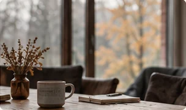
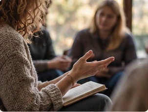
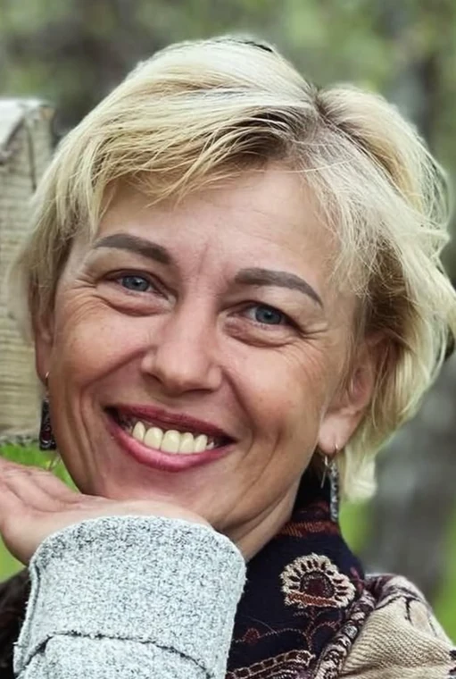
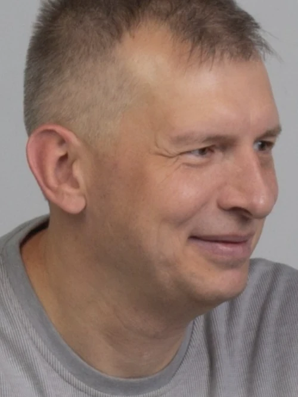
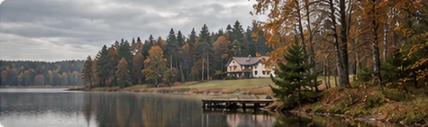

О чём этот шаттл
Это пространство, где можно остановиться, выдохнуть и внимательнее посмотреть на себя. Мы будем исследовать свою идентичность, свой образ себя — Я-концепцию: чего мы хотим, какие выборы делаем, что поддерживает нашу самооценку и чувство целостности, а что мешает.
Через встречи, обсуждения, практические упражнения и личную рефлексию мы будем искать ответы на важные вопросы и опираться на свой живой опыт.

Встреча
с собой
и другими
Что даёт участие
Больше ясности
о себе
Лучше понять свои ценности, потребности и жизненные выборы.
Внутренняя опора
Найти и укрепить то, что помогает оставаться устойчивым в сложные периоды.
Новые взгляды
через встречу с другими
Услышать разные точки зрения и увидеть себя в новом контексте.
Время для важного
Выделить время на себя в спокойной, поддерживающей атмосфере, вдали от повседневной суеты.
Как проходит работа
Мы встречаемся несколько раз в день. Каждая встреча длится 2–3 часа. Между встречами — обед и кофейные паузы, время для отдыха и неспешного общения.
Мы используем обсуждения, практические упражнения, работу с личным опытом и рефлексию. Личное самораскрытие — добровольно, каждый сам определяет степень своей открытости.
Начало — в пятницу, 27 ноября, в 15:00.
Завершение — в воскресенье, 29 ноября, в 16:00.

Глубокие
разговоры.
Живые люди.
Настоящий
опыт.
Ведущие
Профессионально. С уважением. По-человечески.

Валерия Погоская
Врач-психотерапевт,
психиатр-нарколог высшей категории
Специалист с многолетним опытом клинической, реабилитационной и групповой работы.
Профессиональный путь
2016. По данным публикации «Триостайл», названа лучшим психотерапевтом Республики Беларусь 2016 года.
2017. В интервью от 16 мая представлена как заведующая реабилитационным наркологическим отделением «Исток» и врач высшей квалификационной категории.
Читать интервью 2017 года (откроется в новой вкладке)
Глеб Нюхалов
Врач-психотерапевт высшей категории, психиатр
Супервизор экзистенциального направления. Член Восточно-европейской ассоциации экзистенциальной терапии. Руководитель центра психологического консультирования «Онтология».
О профессиональной работе
Преподаёт на программах подготовки психологов и психотерапевтов.
Профиль на psy.education (откроется в новой вкладке)«Ничего лишнего», 4 августа 2021
Место проведения
Дом отдыха «Логойский» — уютное и спокойное место в окружении белорусской природы. Лес, озеро, свежий воздух и тишина создают подходящие условия для вдумчивой работы, отдыха и восстановления.
